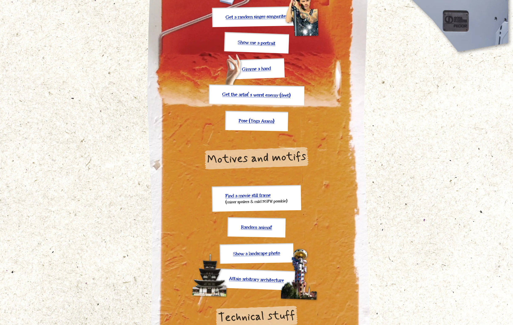

basic randomized exposure to inspiration materials as foundation for art practice
Some years ago, I built a small HTML site linking to randomized drawing inspiration:

I recently revisited the project and noticed that this was one of my first attempt to use simple random selection from a pool of items as a method to surprise the user, to break predictability, to shortcut analysis paralysis.
I still think this is a fairly powerful paradigm.